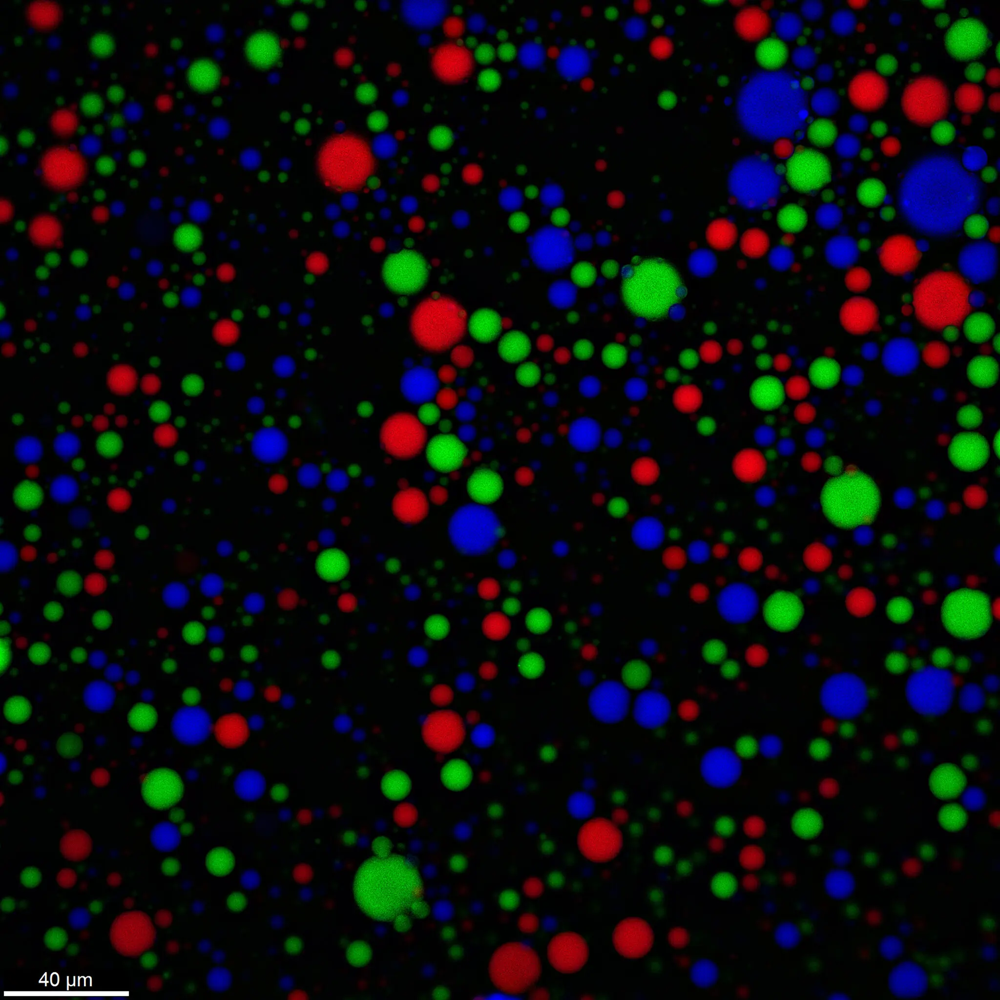

<html lang="en"></html>
    <head>
        <title>project-2-next-level-coding</title>
        <link rel="stylesheet" href="assets/reset.css">
        <link rel="stylesheet" href="assets/style.css">

        <link rel="stylesheet" href="https://use.typekit.net/ooa6aqt.css">
        <link rel="stylesheet" href="https://use.typekit.net/kwc7dhs.css">
        <link rel="stylesheet" href="https://use.typekit.net/fqh4thv.css">

        <link href="https://fonts.cdnfonts.com/css/neue-helvetica-bq" rel="stylesheet">
                

        <script src="https://code.jquery.com/jquery-3.7.1.js" integrity="sha256-eKhayi8LEQwp4NKxN+CfCh+3qOVUtJn3QNZ0TciWLP4=" crossorigin="anonymous"></script>
        <script src="https://cdnjs.cloudflare.com/ajax/libs/p5.js/1.10.0/p5.min.js
"></script>

        <meta name="viewport" content="width=device-width, initial-scale=1.0">
        <script src="https://code.jquery.com/ui/1.13.2/jquery-ui.js" integrity="sha256-xLD7nhI62fcsEZK2/v8LsBcb4lG7dgULkuXoXB/j91c=" crossorigin="anonymous"></script>

    </head>

    <body>

        <!-- <div id="RNA"></div> -->


    <div id="cover">
        <div id="illustration">
        <div id="halo1"></div>
        <div id="table"></div>
        <div id="table-blur"></div>
        <div id="shadow"></div>
        <div id="inner-shadow"></div>
        <div id="rainDrops"></div>
        <div class="vialLid">
            <div class="vL3">
                <div id="vL3-1"></div>
                <div id="vL3-2"></div>
                <div id="vL3-3"></div>
                <div id="vL3-4"></div>
                <div id="vL3-5"></div>
                <div id="vL3-6"></div>
                <div id="vL3-7"></div>
                <div id="vL3-8"></div>
            </div>
            <div class="vL2">
                <div id="vL2-1"></div>
            <div id="vL2-2"></div>
            <div id="vL2-3"></div>
            <div id="vL2-4"></div>
        </div>
            <div class="vL1">
                <div id="vL1-1"></div>
            <div id="vL1-2"></div>
        </div>
        </div>

    </div>


    <div id="context"></div>


        <div id="title">
            How Did the First Cells Arise? With a Little Rain, Study Finds.
        </div>

        <!-- <div id="topic">
            Origins
        </div> -->

        <div id="intro">
            Researchers stumbled upon an ingredient that can stabilize droplets of genetic material: water.
        </div>


        <div id="frame"></div>
        <div class="corner">
            <div id="c1"></div>
            <div id="c4"></div>
            <div id="c2"></div>
            <div id="c3"></div>
        </div>

        <!-- <div class="frame-shadow">
            <div id="f1"></div>
            <div id="f2"></div>
            <div id="f3"></div>
            <div id="f4"></div>
        </div> -->

<!-- 
        <div id="line1"></div> -->
        <!-- <div id="line2"></div> -->

        <div id="button1">
        </div>


        <div id="button2">
            Start Reading ↓
        </div>

    </div>

    <h1 id="headLine">The New York Times</h1>

    
    <div id="content">

        <div id="border1"></div>


        <div id="author">
        By Carl Zimmer
        <br>Illustration by Helen Wu
        </div>

    <div id="img1">
        
        <p>Droplets containing RNA float in water. Each color is produced by a different kind of RNA.Credit. 
            <br><span>Aman Agrawal</span> </p>
    </div>


    <p id="text">
        Rain may have been an essential ingredient for the origin of life, according to a study published on Wednesday. 
        <br>
        <br>Life today exists as cells, which are sacs packed with DNA, RNA, proteins and other molecules. But when life arose roughly four billion years ago, cells were far simpler. Some scientists have investigated how so-called protocells first came about by trying to recreate them in labs. 
       <br>
        <br>Many researchers suspect that protocells contained only RNA, a single-stranded version of DNA. Both RNA and DNA store genetic information in their long sequences of molecular “letters.”
        <br>
        <br>But RNA can also bend into intricate shapes, turning itself into a tool for cutting or joining other molecules together. Protocells might have reproduced if their RNA molecules grabbed genetic building blocks to assemble copies of themselves.
        <br>
        <br>One challenge to building protocells is choosing what to wrap them in. Modern cells are wrapped in membranes, barriers that tightly control how molecules move in and out. But this arrangement would have posed a problem for protocells. They would not have been able to take in the molecules they required to grow or to expel waste.
        <br>
        <br>Some scientists have considered whether protocells formed without a membrane. They drew their inspiration from century-old chemical experiments in which researchers blended chemicals into a liquid. In some cases, some of the chemicals condensed into droplets that floated in the mixture. Could protocells have started off as membrane-free floating droplets?
        <br>
        <br>In recent years, researchers have explored this possibility by creating droplets with RNA contained inside. Shaking the droplets was enough to split them in two. That might have been a simple forerunner to how cells divide as they reproduce.
        <br>
        <br>But the RNA droplets couldn’t stay distinct the way cells do. The RNA strands quickly drifted from one droplet to another, and with time the droplets all fused together, like bubbles of oil merging into a film on top of water.
        <br>
        <br>In 2018, Aman Agrawal, a chemical engineer, discovered a potential solution to this problem. But it would take three years for him to realize what he had found.
        <br>
        <br>At the time, Dr. Agrawal was a graduate student at the University of Houston, studying droplets made from synthetic chemicals. He hoped to turn droplets into miniature factories for producing important compounds, such as insulin.
        <br>
        <br>Doing so would first require making droplets more stable. Dr. Agrawal was impressed by a 2015 study in which Swiss scientists managed to make droplets last for six days by pumping chemicals into microscopic channels filled with purified water.
        <br>
        <br>Dr. Agrawal replicated the results, but could not figure out how the channels made such stable droplets. Four months later, he came across a vial left over from the experiment. He had dumped some extra chemicals and purified water in the vial, sealed it up and forgotten about it. But now, looking at the vial, he was startled to see that the liquid had a milky color. That meant that droplets were still there and floating inside.
        <br>
        <br>Dr. Agrawal discovered that the water was responsible for keeping the droplets stable. The water coaxed the molecules in the outer layer of the droplets to link together. “You can imagine a mesh forming around these droplets,” said Dr. Agrawal, now a postdoctoral researcher at the Pritzker School of Molecular Engineering at the University of Chicago.
        <br>
        <br>In 2021, word of Dr. Agrawal’s work made it to Jack Szostak, a chemist at the University of Chicago and a Nobel laureate who had worked on protocells for over 20 years. Dr. Szostak wondered if water might make RNA droplets more stable as well.


    </p>
</div>


    </body>

    <script src="script.js"></script>
    <script src="sketch3.js"></script>
    <!-- <script src="sketch.js"></script> -->
     <!-- <script src="sketch2.js"></script> -->

</html>
